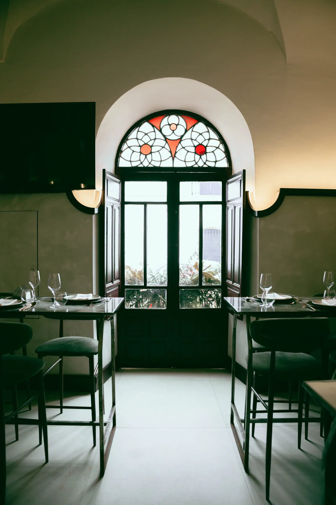
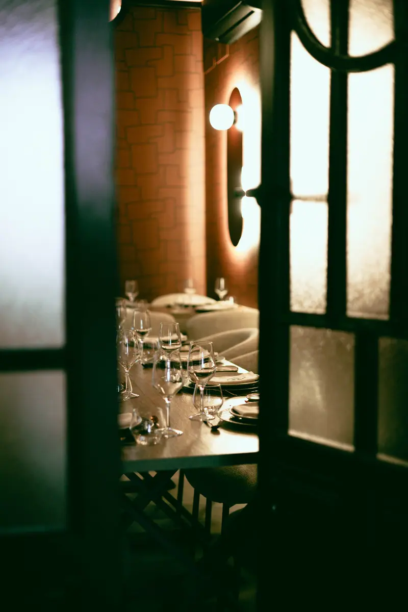
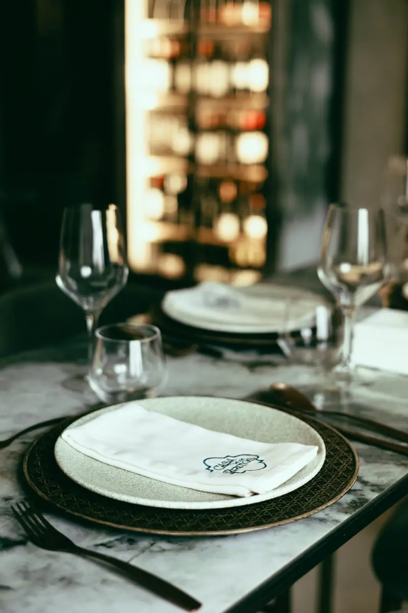

Comedor principal
Mesas de mármol junto a las ventanas del patio.

Un restaurante vestido de fiesta en la antigua casa solariega de los Britos, restaurada para sentarse a comer: puertas de madera y cristal, mármol y luz cálida.

Cada sala tiene su carácter. El comedor principal para el día a día, el salón privado para las celebraciones y la bodega siempre a la vista, para elegir el vino con calma.
Mesas de mármol junto a las ventanas del patio.

Mesa larga tras las puertas de cristal, para comidas de familia, grupos y empresa.
Vinos de Extremadura, Rioja, Ribera del Duero y espumosos.
Al reservar puedes pedirnos la mesa que prefieras: junto a la ventana, bajo los apliques o cerca de la bodega.






El restaurante toma su nombre de la Casa Solariega de los Britos, en el corazón de Ribera del Fresno.
La Casa Solariega de los Britos marcó el pulso social de Ribera del Fresno. Pasó por herencia de don José María Gragera y Brito a doña María del Valle Gragera y Zalamea, y el apellido Brito es el que hoy recupera su nombre.
Una parte del inmueble albergó el Casino de Recreo, hoy sede del Círculo La Unión. Durante generaciones fue lugar de reunión y celebración para los vecinos.
El fotógrafo Fernando Garrorena Arcas retrató la fachada original. Esa imagen se conserva hoy en la Fototeca de la Diputación de Badajoz.
José Miguel Suárez Merino rescata la memoria de la antigua Casa de los Britos. Tras una reforma integral, abre como restaurante con cocina de producto de la tierra.
Abrimos de jueves a domingo
Ver la carta